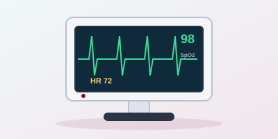
Home / Shop – Equipment Sales
TAZAT BIOMEDICAL
Medical Equipment Sales
Monitors, pumps, oxygen, CPAP, nebulisers and more — enquire for current pricing.
TAZAT SHOP
Medical Equipment Sales
Explore equipment and enquire for the latest price.
CATALOGUE
What we supply
Patient monitorsECG machinesPulse oximetersBP monitorsOxygen concentratorsCPAPBiPAPSuction machinesInfusion pumpsSyringe pumpsDefibrillatorsVentilatorsAnaesthesia machinesECG simulatorsMedical gas flow metersPressure gaugesThermometersMedical weighing scalesNebulisers
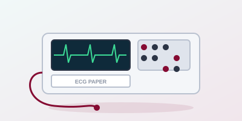
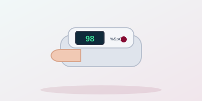
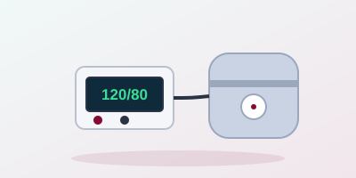
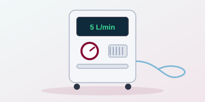
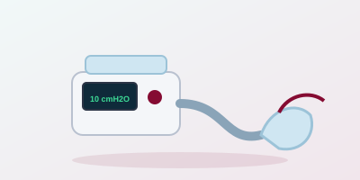
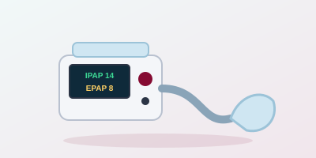
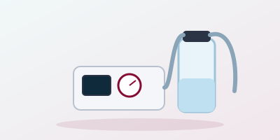
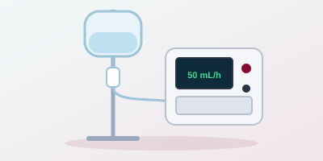
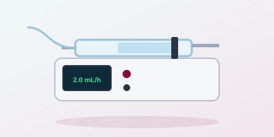
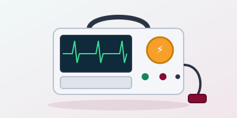
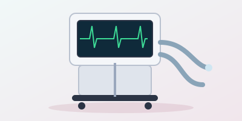
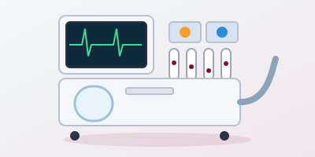
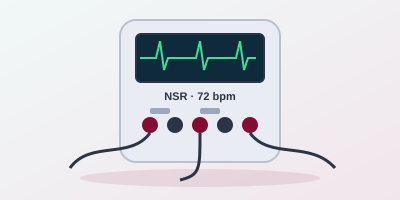
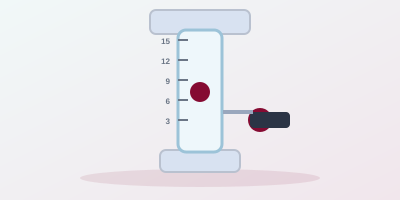
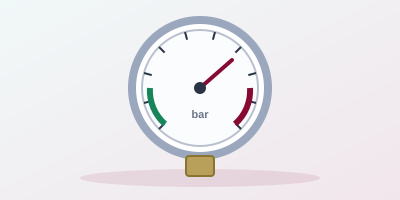
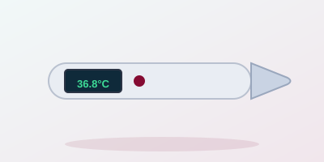
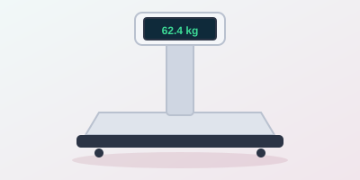
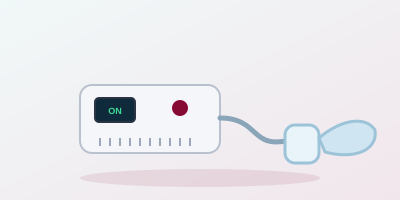
Images are illustrations. Actual model, brand and appearance may vary; replace with your own product photos when available.
SALES SUPPORT
Why buy from Tazat
New & certified refurbished
Options matched to facility budgets.
Brand-agnostic advice
Technical advisory without brand bias.
Install, calibrate, support
Pre-installation site inspection, warranty and after-sales calibration.
Looking for a specific model or brand?Request a quotation →
Ready to elevate equipment reliability?
Request a field calibration visit, an equipment quote, or speak to our biomedical crew.